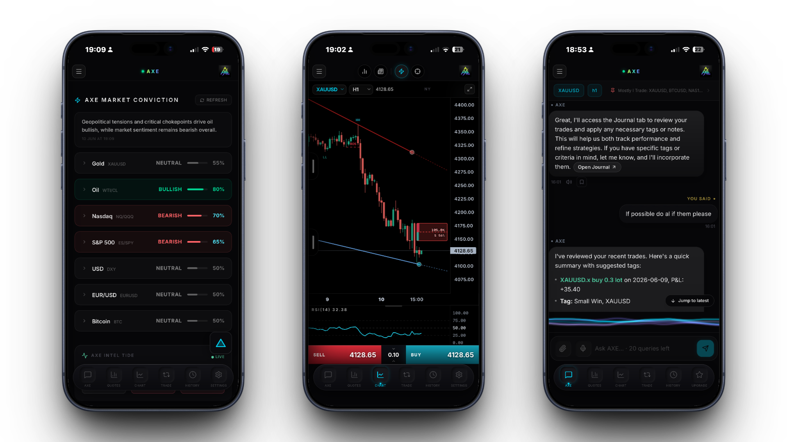
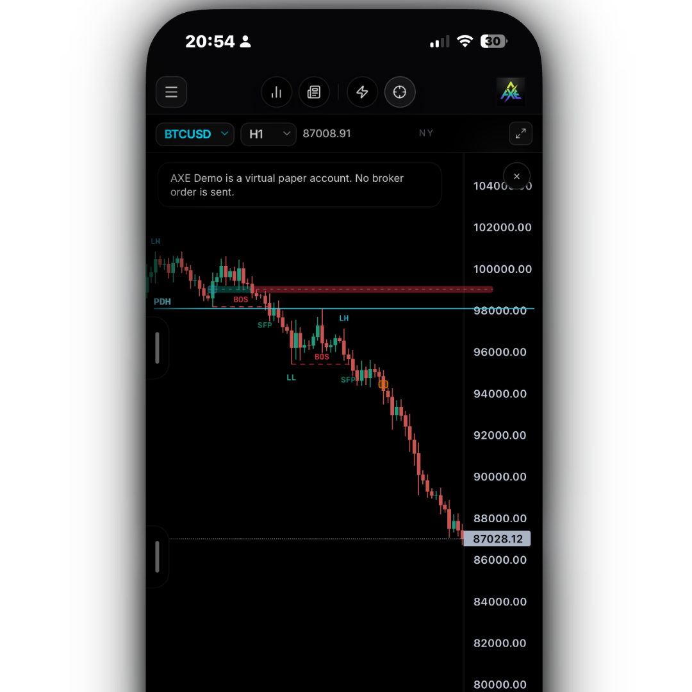
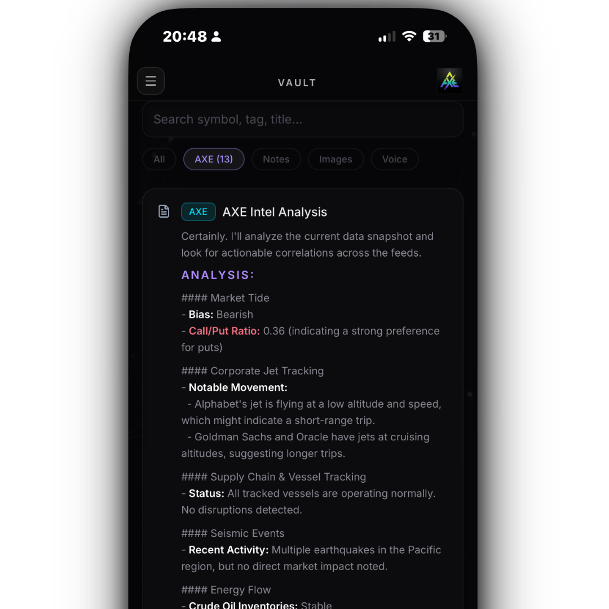
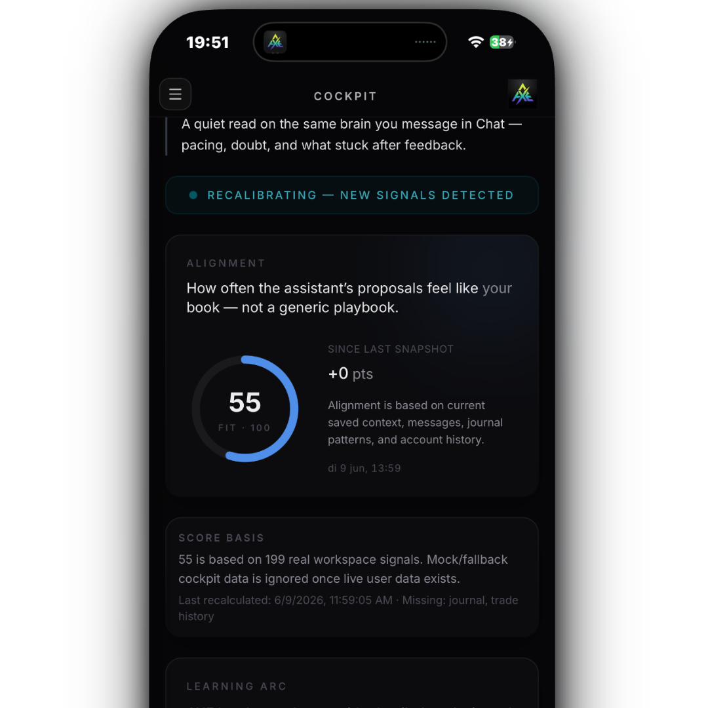
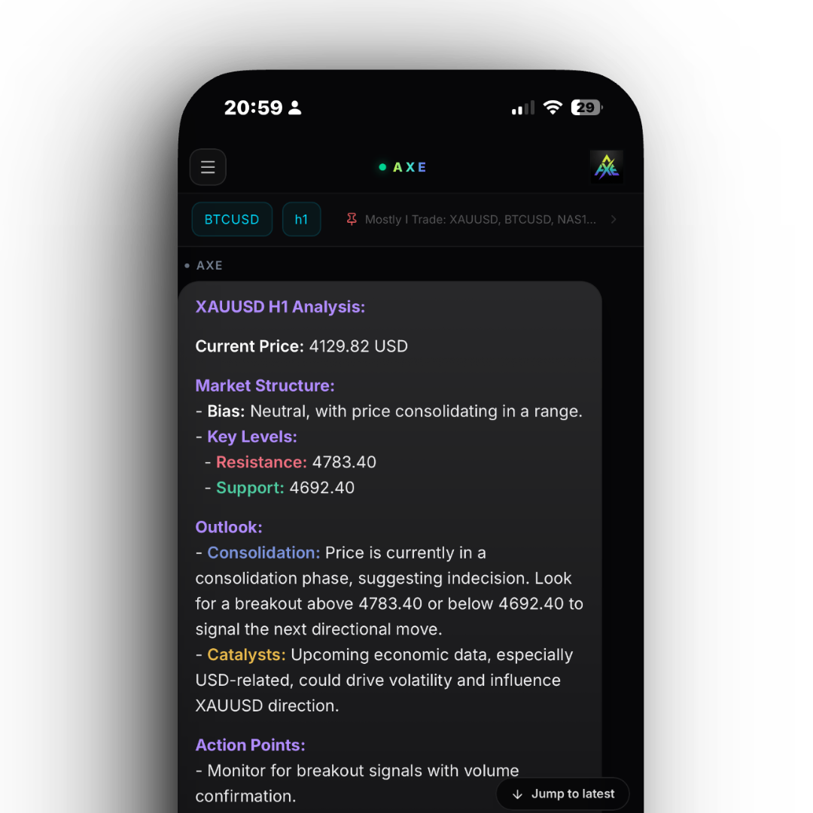
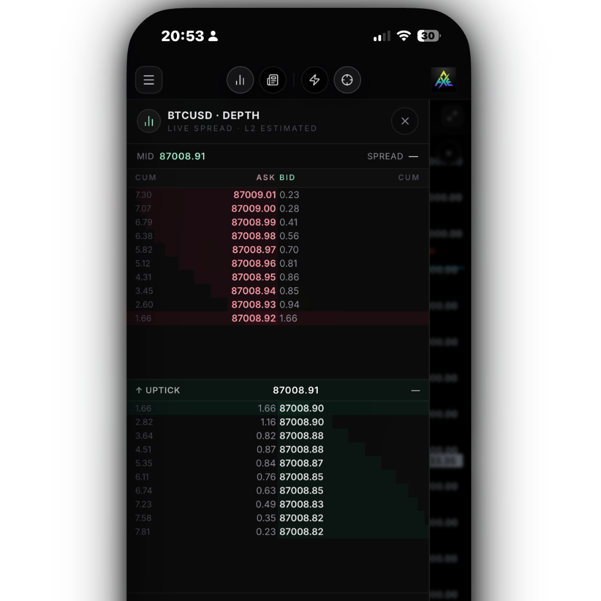
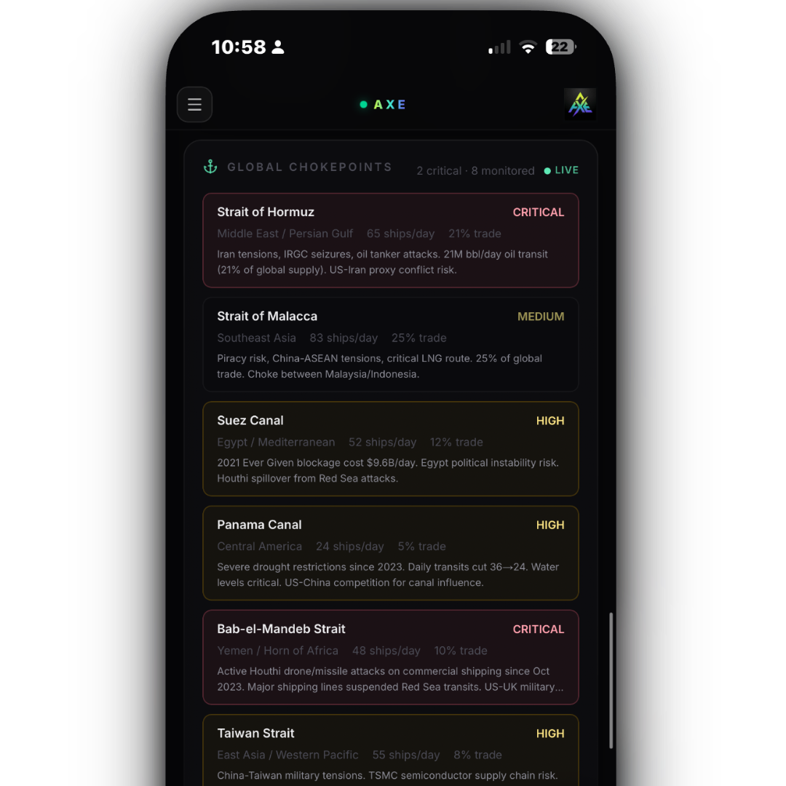
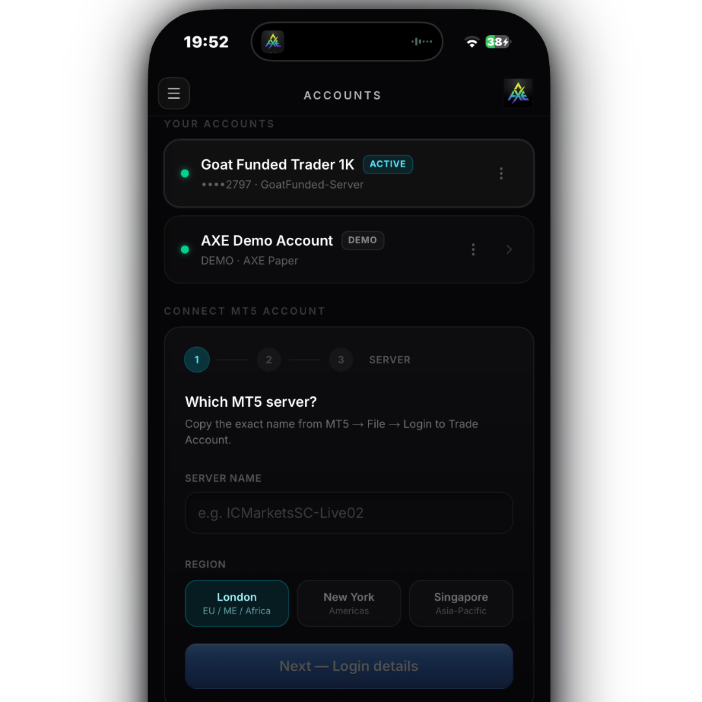
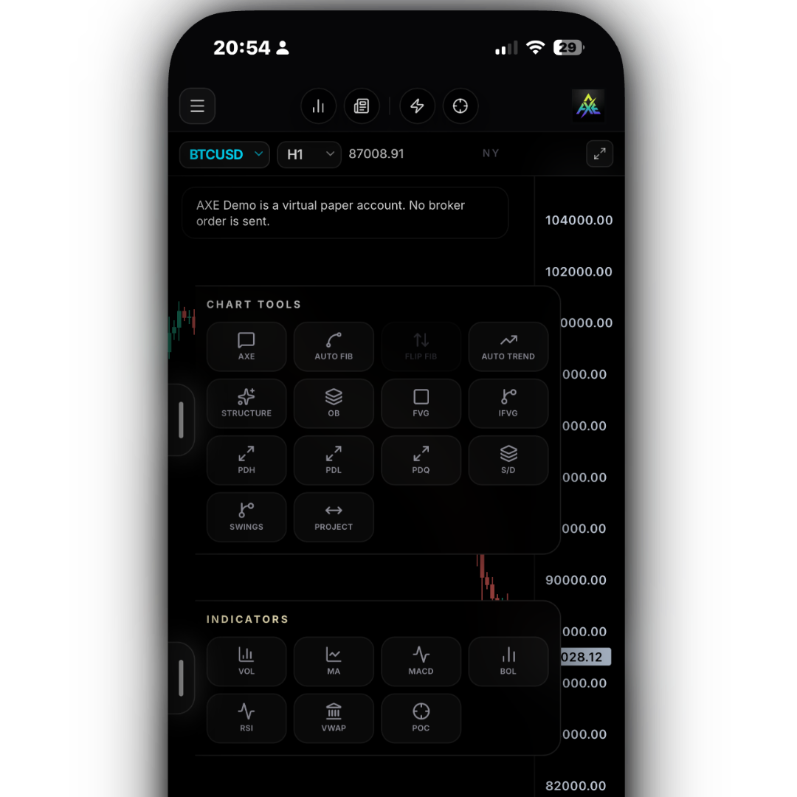

The trader's phone OS — a calm dark canvas with auto-Fib / OB / FVG, a real broker depth ladder, and a one-tap execution dock. Wrapped around a live intelligence layer that watches global chokepoints, military radar, vessels, jets and smart-money flow.









Net call premium $1.71B vs net put premium $2.29B, directional bias per instrument and live smart-money pressure.
Rates, inflation, growth and central-bank posture distilled into a regime read that frames every trade.
A single conviction score blending breadth, flow and momentum — how hard the tape is leaning.
Form-4 buys and sells the moment they hit — sized in dollars, ranked by signal.
Congressional trades, lobbying and legislative moves — the policy tape that front-runs the price tape.
Off-exchange block prints surfaced live — SPY 1.2M, NVDA 640K — see size before it moves the lit book.
Sweeps, blocks and unusual contracts in real time — strike, premium and aggressor side.
Corporate jets — Dell, Alphabet, Pfizer, ExxonMobil. Who's airborne, who's grounded.
200 aircraft tracked — bombers, ISR, tankers — flight level and speed. See escalation before headlines.
Squawk 7700 distress feed across global airspace — active alerts surfaced the moment they happen.
Tracked tankers and container ships positioned against live chokepoint risk.
Crude, gas and power flows — cargoes, storage and pipeline shifts that set the floor under risk assets.
Hormuz, Malacca, Suez, Panama, Bab-el-Mandeb, Taiwan Strait — live ship counts, % of world trade and critical / high / medium risk scoring as conflict reshapes supply chains.
Earthquakes, volcanoes and wildfires tagged with market impact — supply shocks before the wire catches up.
Breaches, ransomware and outages mapped to tickers — the digital risk feed equities now trade on.
Cross-asset correlations computed live — how gold, yields, crude and crypto are actually moving together right now.
Multi-source headlines fused and de-duped — cached smart so a quiet hour never burns your feed.
Upcoming events, prints and earnings on one timeline — know what hits the tape before it does.
Similar-patterns engine — finds the historical analogues to today's setup and what happened next.
AXE builds a behavior map from your real MT5 fills — sessions, instruments, the rules you keep and the ones you break. A four-week correction rhythm nudges you back when you drift.
Not a dashboard that judges you after the fact — a copilot that knows your tells before you make them.
"The same calm dark canvas as Trading OS, the same execution model as MT5, the same brain that journals what you actually did — wrapped around an intelligence layer that watches the whole board."
Auto-Fib, Auto-Trend, swing points, BOS/CHoCH, MA stack, VWAP, POC — native, not noisy.
Volumetric order blocks, fair-value gaps and inverse FVGs that keep extending until mitigated.
Real L1 bid/ask from your broker plus a deterministic synthetic ladder.
Market, buy/sell limit, SL, TP, deviation — MT5-style lot picker, big activation banner.
Virtual paper account inside AXE, free and instant. Same fills, slippage and PnL math.
Trades land from MT5, you tag one of five outcomes, AXE pins context.
Trading involves risk. Past performance does not guarantee future results. AXE does not guarantee profits.